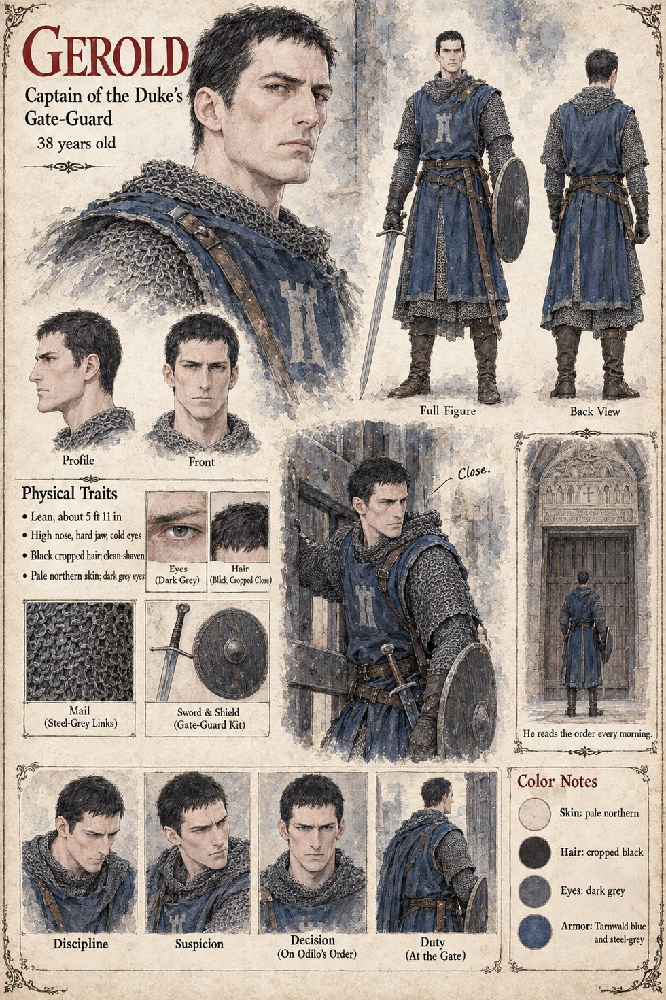

Gerold
Captain of the Duke's gate-guard, Tarnwald · 38 years old by his sheet
A lean, high-nosed, hard-voiced captain in Tarnwald blue, sent by the steward Odilo with twenty men to the Low Forge on the Uncounted night, as a precaution, in the dry steward's way of seeing that a thing will be done by arranging for it to be done twice. He finds eighty hired lances sitting in the mud at the door of the lean-to and a captain in the lintel who does not rise. He says, with a sort of cold fury, that he has an order from the Duke of Tarnwald to take the household of the forge, that there is a boy in the doorway, and that he would thank the Company to stand up. We are nobody's, says Hagen Brandt, and we are sitting. Gerold understands it perfectly and does not argue; he does the thing a captain of the Duke's guard is bound to do, which is to take the boy himself, and puts two men at the lean-to door. They take the apprentice by the arms, and the ox groans.
He is at the gate-tower at the north head of the Nine Arches on the Uncounted Day, where the order of the tower is cut over the passage in the letters of the Roman time and every captain who takes the post reads it on his first morning and walks beneath it every morning after: that on the word to close, the great gate is to be shut and barred. A quarter of an hour after the Duke has passed through toward the bridge, Odilo, who has seen three barges of the Countess's levies coming down under the north bank toward the water-stair, says a single word to him, close. He means the little door at the foot of the stair; he has not said which door, nor bar. The captain who has read the order every morning and has never once been given the word supplies what a steward leaves out, and the two leaves of black oak, bound in iron, move on their rusted chains for the first time in three hundred years and meet with a boom that shakes the pigeons off the tower, and the bar goes home. The Duke hears it, and says Open it. The steward Odilo of this case is not the Hierarch Odilo of Cases 2231 and 0202.
The manuscript gives his name, his office, his look and his one act. The sheet's 38 years, lean build of about 5 ft 11 in, hard jaw, cold dark-grey eyes, black cropped hair, clean-shaven pale northern skin, Tarnwald-blue tabard with a tower device over mail, sword and round shield are its own, as are the panel speech Close and the line He reads the order every morning; its expression panels run Discipline, Suspicion, Decision (on Odilo's order) and Duty (at the gate).
“that he would thank the Company to stand up”